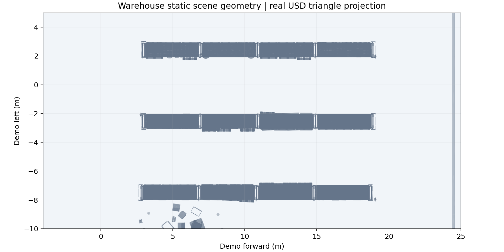
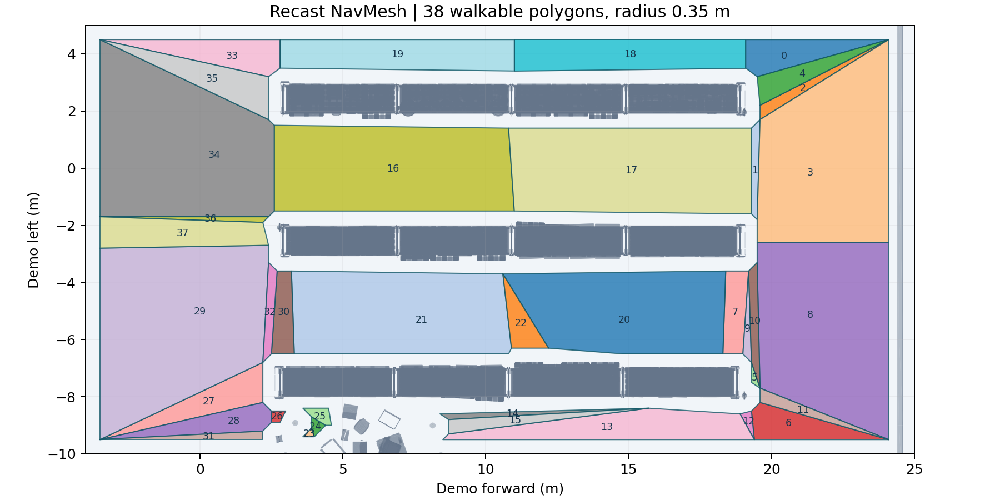
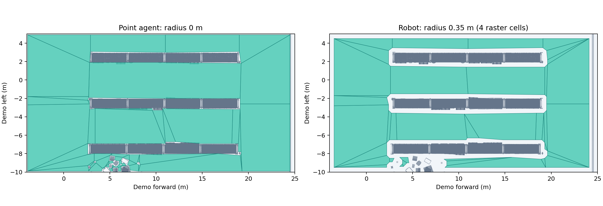
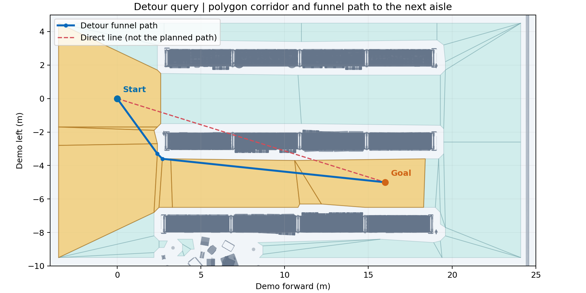
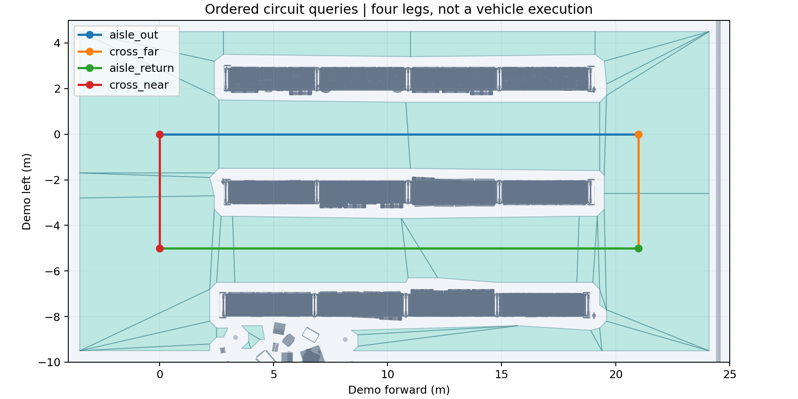

Isaac Sim 5.0 静态场景几何 → 高度场 → 半径收缩 → 多边形 NavMesh → 路径查询。未执行车辆控制。
174,239 个输入三角形，38 个导航多边形；建网、保存重载与查询合计 0.062 秒（不含 Isaac 导出、编译和绘图）。
OBJ 网格 · 顶点/多边形/邻接 JSON · Detour 二进制 · 完整报告





{
"disk_reload": true,
"five_requested_routes_complete": true,
"rack_target_rejected": true,
"paths_inside_polygon_mesh": true,
"circular_footprint_raster": true,
"fixture_detour_and_rejection": true,
"radius_reduces_area": true
}静态三角形几何与 PhysX 的最终碰撞形状可能不同；实际控制还需要 footprint、转向和执行核验。